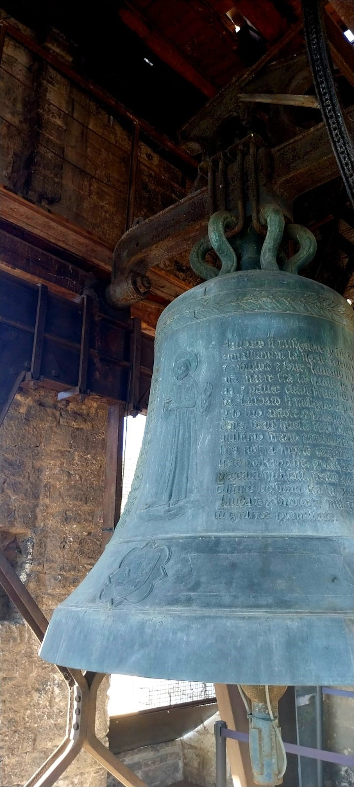
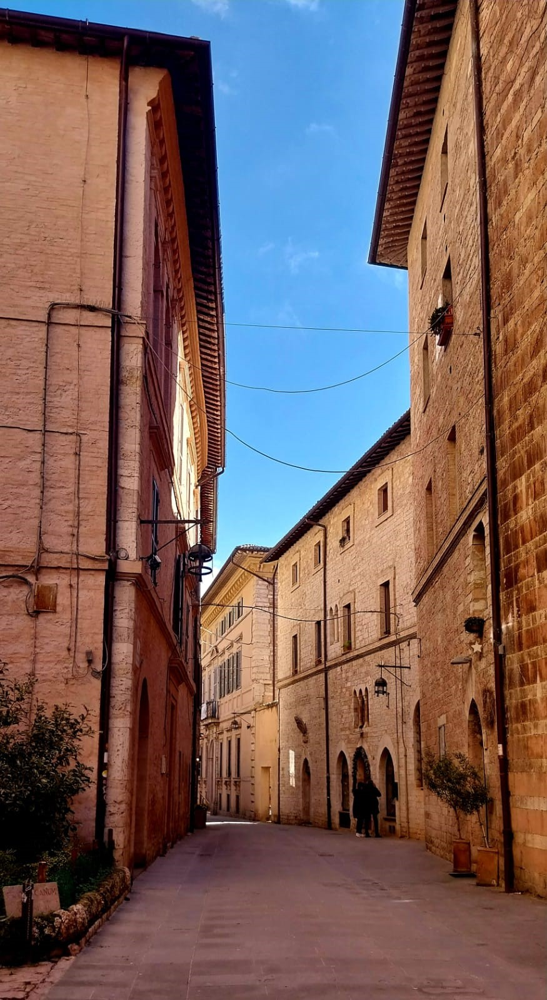
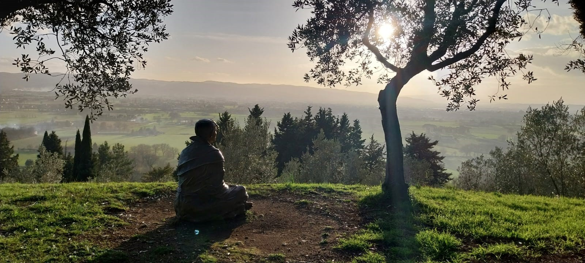
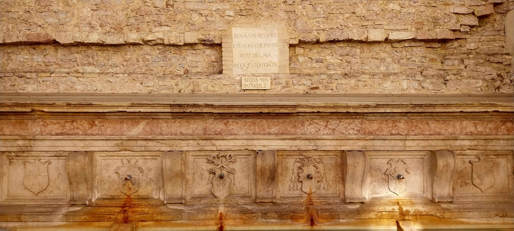

Visita Guiada (Español)

Asís Patrimonio UNESCO
Un recorrido por la espiritualidad y los frescos que cambiaron la historia del arte.

Spello, Spoleto y Foligno
Descubre la arquitectura viva de los burgos medievales más bellos de Umbría.

Arte y Naturaleza
La armonía perfecta en el corazón verde de Italia.
Visite Guidée (Français)

Pérouse Médiévale
Décryptez l'histoire et la splendeur de la capitale ombrienne.
Esprit et Paysage
Une immersion unique dans l'art et la nature de la campagne ombrienne.
Visita Guidata (Italiano)
Assisi e Giotto
Un viaggio storico e artistico attraverso i capolavori dell'epoca.
I Segreti di Perugia
Percorsi esclusivi alla scoperta dei monumenti iconici del centro storico.